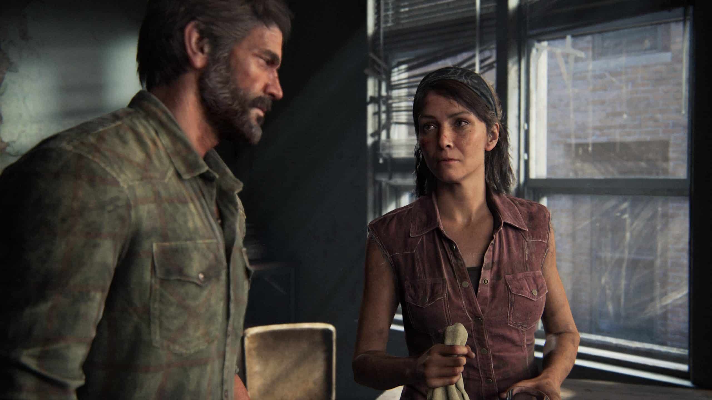

The Last of Us Part I: vale a pena?
Jogo chega ao PlayStation 5 oferecendo belas melhorias gráficas, muita acessibilidade, mas mudanças tímidas na jogabilidade.
Part I é o remake que (quase) ninguém pediu, mas que se faz “necessário” em vários aspectos. Depois de jogar, não há como ter outra sensação. Gráficos atualizados e muito bonitos, recursos compatíveis com o DualSense, mecânicas de jogabilidade mais modernas, ajustes na inteligência artificial e opções de acessibilidade são os destaques que dão à consagrada jornada de Joel e Ellie um ar mais contemporâneo.
Vai agradar aos fãs mais apaixonados? Certamente. Só que, por outro lado, não é exatamente uma “reformulação total da experiência original” como a Naughty Dog faz questão de dizer por aí. The Last of Us Part I funciona mais como uma versão definitiva do que como um remake. E talvez este seja seu calcanhar de Aquiles.
Resistir e Sobreviver
É o que Ellie costuma dizer após algum encontro intenso com infectados. Ela retirou essa frase dos quadrinhos de Savage Starlight, colecionáveis do jogo, e serve até como uma filosofia. Para que The Last of Us resista e sobreviva por mais tempo, só com uma atualização dessas mesmo. Sinal dos tempos.
As melhorias visuais são o ponto alto do game, que foi refeito usando as técnicas mais modernas da Naughty Dog. E está tudo muito bonito, das expressões faciais incríveis aos cenários caprichados e mais detalhados.
As cinemáticas estão lindas, enfatizando cada detalhe dos rostos dos personagens da narrativa. Tess, por exemplo, agora conta com uma face mais cansada e sofrida, aproximando-a de como realmente imaginamos que seria uma sobrevivente em um mundo pós-apocalíptico como esse.
Joel e Ellie estão mais alinhados com o que vimos em The Last of Us Part II. Mas, mesmo assim, você vai se surpreender. As cenas mais emblemáticas do game estão mais profundas, entregando nos mínimos detalhes as sutilezas da trama. Vale a pena rever cada uma delas. Agora é possível enxergar até a profundidade das pupilas e a direção dos olhares… Realmente muito bacana!
Os cenários também estão – muito – melhores. Saem aquelas texturas opacas e lavadas da versão remasterizada para ambientações mais preenchidas e realistas. A natureza avançou sobre as cidades com mais ferocidade, a iluminação está incrivelmente mais bonita, impactando diretamente na atmosfera.
Um bom exemplo é o trecho do hotel, onde Joel se separa de Ellie por alguns momentos e deve religar a energia de uma porta através de um gerador – famosa parte onde filho chora e mãe não vê. Por mais que você já tenha passado por esta etapa no PS3 e PS4, em Part I terá um saborzinho diferente. É tudo mais escuro, claustrofóbico e assustador.
Também temos cenários mais reativos. Uma bomba de pregos agora faz com que janelas – e pedaços de clickers – voem para todos os lados. Rajadas de tiros são capazes de causar danos em estruturas e proteções. Ainda que o nível de destruição não seja algo como já visto em jogos da série Battlefield, ficou legal.
Os trejeitos dos personagens completam o pacote. As transições, como já explicado pelo estúdio, estão suaves e conectadas com o que acontece nas conversas. Quase como uma linguagem corporal, dá pra notar quando Ellie está mais desconfortável com algo através dos seus novos gestos.
No campo das sensações, entram em cena o DualSense e o Áudio em 3D. The Last of Us Part I explora bem as capacidades do controle do PlayStation 5. Quando Joel está sob chuva, você consegue sentir na resposta tátil os pingos na neve, com Ellie, as andanças ficam mais pesadas e cadenciadas.
Ao disparar armas e objetos, os gatilhos oferecem uma sensação de resistência, principalmente com o arco e flecha. Disparos de shotgun e do revólver contam com mais recuo, contribuindo para tornar os confrontos mais aprofundados.
Por fim, o Áudio. Caso você conte com o headset Pulse 3D, terá uma jogatina mais imersiva. Sons ambientais e de onde vem as conversas são bastante perceptíveis.
De modo geral, The Last of Us Part I melhorou bastante em relação a sua versão remasterizada, mas evoluiu timidamente na jogabilidade. Em essência, ela é a mesma, com ajustes aqui e ali.
Muita gente gostaria que o jogo contasse com as mecânicas de Part II como: se esconder melhor nos ambientes, rastejar por debaixo de locais, plantar armadilhas mais sofisticadas e até poder executar finalizações brutais. Mas, não espere por isso.
Como não houve alterações no level design, não há como entrar embaixo de um carro, ou mesmo usar a excelente mecânica de esquiva do segundo. Exatamente por isso fica um pouco estranho chamá-lo de remake. Talvez termos como “remaster+”, que a Activision usou para explicar Crash Bandicoot N. Sane Trilogy e Tony Hawk’s Pro Skater 1+2 fazem mais sentido.
O que mudou exatamente? Os movimentos de Joel e Ellie estão melhores graças às novas capturas, e isso gera animações mais condizentes, refletindo nos confrontos corpo a corpo. Essas transições deixam as coisas suaves.
A Inteligência Artificial, tanto dos seus companheiros, como dos inimigos está melhor. Os adversários se comunicam entre si, fazem rotas menos previsíveis e flanqueiam pelos lados. Ellie, por sua vez, observa melhor o cenário, se esconde, afasta de ser descoberta com mais esperteza e até aponta o local dos vigilantes.
Se você jogou o Remastered, sabe exatamente que a garotinha cruzava na frente dos inimigos e nada acontecia. Em Part I, isso melhorou agradavelmente, mesmo que ainda ocorra em algumas situações.
Outro bom complemento são os upgrades em armas e habilidades. Ainda que sejam os mesmos, a organização de menus está melhor e, novamente, um pouco mais similar a The Last of Us Part II.
Saem aqueles menus de upgrades em formato de tabela e entra uma organização mais moderna e fácil. Em essência é o mesmo processo: você distribui seus pontos para desbloquear melhorias em equipamentos e skills.
Também houve um avanço nas animações de Joel quando faz uso da bancada. Embora em alguns casos ele apenas passe um paninho nas armas, em várias situações o vemos trocar parafusos e aditivos.
E, por fim, os modificadores de jogabilidade. Após completar a jornada, você pode rejogar o game com uma série de modificações que vão de munição infinita, até inúmeros filtros de cores. Somando a isso, temos dois novos modos: Morte Permanente e um focado em speedrun.
Para todos

The Last of Us Part I conta com dezenas de opções de acessibilidade. Talvez este seja o jogo mais acessível de todos os tempos.
Reforçando que acessibilidade não se trata de tornar o gameplay fácil, mas possibilitar que a maior quantidade de pessoas possíveis possam experimentá-lo, oferecendo recursos que auxiliam as pessoas com dificuldades de visão, audição e até mesmo locomoção.
O gamer é capaz de configurar os controles de muitas formas possíveis, ligar-desligar auxílios como troca de armas automáticas quando ficar sem munição, ampliar o campo visual, cores para daltônicos, amplificar o Modo Escuta, etc.
Para a maior parte dos jogadores, não faz diferença. Mas experimente acompanhar um dos trabalhos da AbleGamers Brasil e então perceba o quanto essas opções são importantes.
E os troféus. Bem…não é exatamente uma opção de acessibilidade, mas está mais fácil conquistar o troféu de Platina, por exemplo. O jogo não exige que você termine no Punitivo, o que facilita bem as coisas. Isso, claro, faz parte de uma estratégia da Sony em tornar as conquistas mais simples, gerando mais engajamento dos fãs nas redes sociais.
Melhorias à serviço da narrativa
Toda esta combinação de melhorias, com cenários reconstruídos, novas capturas de movimentos, cenas mais bonitas com novos e avançados truques de iluminação, jogabilidade refinada, novos modos e diversas opções estão à serviço da narrativa.
O ponto central de The Last of Us ainda é sua poderosa história e ela é potencializada por todos estes elementos. Com cenários mais ricos em detalhes – experimente a inspecionar os mínimos detalhes do trecho do museu, agora com obras de arte impressionantemente recriadas -, você é sugado para dentro do ambiente de uma forma ainda mais imersiva.
A jogabilidade ajustada confere mais peso ao apertar botões, impulsionado pelo DualSense e pelo áudio 3D.
Mas claro, não espere encontrar nenhuma novidade na trama. É, rigorosamente, a mesma do original e do remaster. No entanto, há sutilezas, como uma pequena retcon, ester eggs em lugares diferentes e até a maneira como você observa as histórias paralelas vistas em fotografias e documentos.
Sonic Frontiers tem problemas técnicos
Como já mencionado, a SEGA construiu as Ilhas Starfall ao colocar elementos clássicos em uma “Zona Aberta”. Isso significa que o jogador encontrará as já mencionadas “minifases” em todo o mapa, estas sessões de plataforma (em 2D ou 3D) que servem para obter itens, alcançar locais mais altos ou atravessar ilhas.
Conforme Sonic corre pelo cenário, não é raro haver o “pop-in“, bug no qual um objeto antes inexistente simplesmente surge. Lembra quando mencionamos o problema de atravessar o arquipélago do terceiro mapa? Por muitas vezes, o player não conseguirá observar essas sessões de plataforma ao longe. Ele precisa se movimentar, chegar perto e “tcharam!”: um corrimão aparece bem diante dele.
As falhas gráficas não param por aí. Em cutscenes e no gameplay, é possível ver pequenos pontinhos pretos na paisagem em determinados momentos — tirando a beleza do cenário. O lado positivo é justamente o estilo de arte adotado para o jogo, com as arquiteturas das construções antigas em destaque.
Outro problema que deve irritar quem joga no PlayStation 5 é a grande quantidade de telas de loading no título — embora sejam rápidas. Em contrapartida, enquanto o jogo carrega, o player consegue treinar as habilidades de Sonic em pequenos tutoriais.
Os tiros, valem a pena?
Eis o grande ponto de discussão. O debate sobre a necessidade deste relançamento e até mesmo seu preço, é justo. Por outro lado, essa repaginação se justifica pelo conjunto, mas ainda assim não fará com que Sony e Naughty Dog escapem de críticas.
E então, vale ou não? Se você é fã, claro que vale. As melhorias gráficas são muito evidentes, o jogo está melhor do que nunca, repleto de opções de acessibilidade, e, ainda que o gameplay não tenha sido refeito para se parecer com Part II, foi melhorado em vários aspectos sutis. Some isso às capacidades do PS5 – carregamentos rápidos, DualSense + Áudio 3D – e você tem mais motivos para revisitar a trama.The Last of Us Part I é incrível.
Mas se você não é um fã fervoroso, ao analisar o que é oferecido, pelo preço cheio, vale pensar um pouco mais. Talvez esperar uma promoção seja a melhor decisão no momento. E isso não é ser hater, é apenas uma decisão racional.
Fonte:MeuPlastation